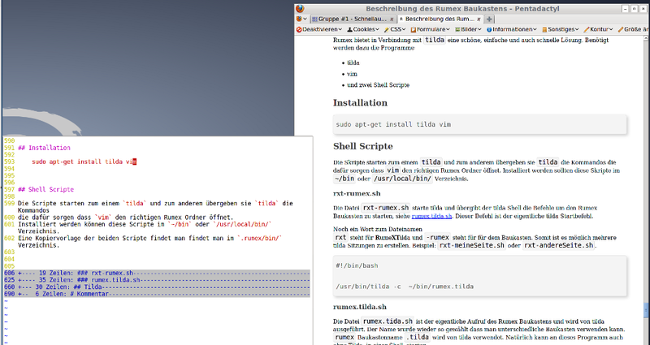

|
An diesem Dokument wird zur Zeit gearbeitet.
|
Die Beweggründe mit einem eigenen System eine Internet Seite zu Verwalten sind mit der Zeit in mir gewachsen.
Es gibt immer mehr Systeme die zum Erstellen und Verwalten von Internetseiten eingesetzt werden. Probiert habe ich schon viele und mit den meisten war ich auch sehr zufrieden, wenn da nicht immer der Hacken mit dem Updates wäre. Irgendwie, zumindest kommt es mir so vor, ist der Aufwand das System der Seite auf dem aktuellen Stand zu halten größer geworden als den Inhalt der eigentlichen Seite zu pflegen.
Ich wünschte mir wieder eine Internetseite wie in früheren Zeiten. Eine Seite die aus einfachen HTML Seiten besteht.
Irgendwann bin ich dann auf markdown und pandoc gestoßen und die Idee dieses Home Page Baukastens ist entstanden.
Rumex ist die lateinische Bezeichnung für den Ampfer und dieser taucht in der Natur dann auf, wenn der Boden Überdüngt, Verdichtung und Beschädigt ist. Rumex gehört zu den sogenannten Pionier Pflanzen. Er ist ein Lückenfüller.
Genau das soll Rumex auch sein “ein Lückenfüller” für alle die … Systeme satt haben.
Rumex ist auf ein *nix System ausgerichtet. Auf diesem sollten folgende Programme installiert sein:
Wobei bash, make und perl eigentlich bei jeder *nix Installation bereits vorhanden sein dürft. Die restlichen Programme müssen nach installiert werden.
Wer mit dem Editor vim zurecht kommt sollte sich auch (g)vim installieren. Rumex besitzt eine gvim Erweiterung die, die Arbeit bzw. die Suche nach dem richtigen Befehl am Anfang um einiges erleichtert.
texlive1 wird nur gebraucht wenn man auch PDF Dateien erstellen möchte.
wput sitecopy wird nur gebraucht wenn man die Daten per FTP hoch laden möchte.
Für die Installation auf deinem Rechner musst du dir zu erst das ZIP bzw. das tar.gz Archiv vom github Server holen und entpacken
oder
Jetzt wechsle in das Verzeichnis rumex-gh-pages/.rx und starte die Befehle make install und make show.
Fertig :-)
Nach der Installation muss Rumex noch auf dich eingestellt werden. Genauer gesagt sollten folgende Angabe für deine neuen Seite angepasst werden.
Eine Kurzbeschreibung findest du, nach der Installation, auf der Startseite von Rumex oder hier.
@todo: Hier fehlt noch die Beschreibung
@todo: Hier fehlt noch die Beschreibung@
Eine Übersicht der Rumex Kurztasten für den Editor vim findest du auf der Seite VIM-Kurztasten.
Eine Übersicht des Rumex Menüs für den Editor gvim findest du auf der Seite GVIM-Menü.
Dateiname ergänzen Will man in die Datei einen Dateinamen einbauen, weiß aber nicht mehr genau wie er heißt, kann man folgenden Trick verwenden. In diesem Beispiel wird ein Bildname gesucht. Im Text schreibe man ../bilder/tw und drückt dann die Tastenkombination C-X + C-F, gvim öffnet ein Dialogfeld in dem alle Dateien die auf dieses Muster übereinstimmen geöffnet. Gibt es nur einen Treffer wird dieser gleich eingefügt.
Wort innerhalb des Dokumentes suchen Sucht man ein Wort das man im Dokument schon einmal verwendet hat, um zum Beispiel darauf zu verweisen. Schreibt man den Wortanfang und drückt dann C-P. Es öffnet sich ein Dialogfeld in dem alle Wörter die auf dieses Muster passen angezeigt werden. Gibt es nur einen Treffer wird dieser gleich eingefügt.
Nützliche Erweiterungen Vim bietet ein paar nützliche Erweiterungen in Form von plugins an. Hier eine Liste, der plugins, die ich gerne verwende.
In die .vimrc muss dann noch nachfolgende Zeile eingebaut werden.
eingebaut werden.
Jetzt braucht man die Erweiterungen nur mehr in das Verzeichnis .vim/bundle zu kopieren und vim neu starten. In Verbindung mit git wieder eine einfache Sache.
Für das öffnen dies Datei Dialogs sollte man sich dann noch eine Kurztaste konfigurieren.
@todo
@todo
Auf der Seite rumex.it-bayer.de findet man eine Beschreibung wie man den rumex Baukasten auf einen nicht github.com Server installiert.
@todo
@todo
Im root Verzeichnis findet man alle HTML Dateien der Seite. Diese werde vom Baukasten erstellt und müssen nicht von Hand verändert werden. Zusätzlich findet man noch ein folgende Systemdateien:
Folgende Dateinen und Verzeichnisse sind hier zu finden
Das Aussehen der Dateien bezüglich des Inhaltsverzeichnisses könnte auch durch die Dateiendung gesteuert werden.
Zusätzlich könnte die Dateiendung auch eine unterschiedliche Verwendung der Dateien ermöglichen.
Bei der Änderung der Dateiendung bleibt der eigentliche html Name gleich. Nur die Funktion der Einbindung ändert sich.
Im Verzeichnis pandoc befinden sich Sonderseiten.
Die Startseite markdown/start.rx0s muss vorhanden sein. Es reicht auch ein ‘touch markdown/start.rx0s.
Der normale Aufbau könnte so ausschauen. Die pandoc Kopfzeile sind nicht zwingend erforderlich.
Die Einzelseiten liegen alle im Verzeichnis rumex und zwar in der Sprache markdown bzw. der Erweiterung von pandoc.
Diese Einzelseiten werden in chronologischer Reihenfolge in die Startseite index.html eingebunden und bilden sozusagen das Inhaltsverzeichnis der Seite. In jeder Einzelseite wird dazu ein sogenannter “Vortext” hinterlegt. Die Seite bzw. der Kopf der Seite hat dabei folgenden Aufbau.
@todo
Änderung gegenüber des Original pandoc Templates.
@todo
Wird nicht aus den einzelnen Dateien erstellt sondern muss manuell editiert werden, Datei .rx/rss.rx0x.
Jede Überschrift eines Eintrags muss mit einem {.nn1} enden.
Danach kommen die Angaben zu:
Link: Verweis zur Seite mit weiteren Informationen
Autor: Autor der den Eintrag geschrieben hat
Kategorie: Kategoie des Eintrags
Datum: Datum des Eintrags. Das richtige Format bekommt man mit dem Befehl date
-R.
die in HTML Kommentar Marker eingeschlossen sind.
Anschließend folgt die Meldung. Zur Zeit werden folgende pandoc Formatierungen unterstützt.
Der Dateiname ist mit rss.xml vorbelegt und kann über die Variable RSS_FILE in der config.md geändert werden.
Der Title des RSS Feed wird durch die Variable RSS_TITEL angepasst.
Den RSS Link kann man auch auslagern so dass dieser auf eine andere Seite zeigt. Dazu setzt man die Variable RSS_EXTERN mit dem entsprechenden Link. Die Variabel RSS_FILE wird dadurch nicht mehr verwendet. Auch der RSS Lauf wird dadurch ausgeschaltet und durch eine Meldung ersetzt.
Für die einzelnen Einträge steht auch eine Kurztaste .rnn zur Verfügung.
In Gvim unter
Eingefügt wird dann folgende Vorgabe. Der Wert hinter Datum wird von System ausgelesen und entsprechende gesetzt.
Durch die beschriebenen RSS Variablen wird die Erstellung des RSS Feed gesteuert. Es wird in jede HTML Datei nachfolgender Header Abschnitt eingebaut wenn die RSS_TITLE Variable gesetzt wurde. RSS_FILE bzw. RSS_EXTERN steuern den href Eintrag.
Rumex kann auch auf einem USB Stich installiert werden. Der Stick muss aber ein
Dateiformat besitzt
welches mit Dateirechten und Symbolische Links umgehen kann.
USB Sticks im VFAT Format funktionieren nicht. Man kann zwar die Daten darauf ablegen. Das Arbeiten über den Stick funktioniert nicht wirklich. Auch wenn man die Daten, von einem VFAT Stick, auf ein *nix System kopiert werden muss händisch nach gebessert werden.
LinkTipp: USB Stick unter Linux verschlüsseln
@todo
Gesteuert wird der Baukasten mittels make im Unterverzeichnis rumex. Folgende make Befehle stehen dabei zur Verfügung.
@todo
Wer wünscht es sich nicht einen schnellen Zugriff auf seine Homepage. Sei es um schnell was zu ändern oder genauso schnell was neues einzustellen. Rumex bietet in Verbindung mit tilda eine schöne, einfache und auch schnelle Lösung.

| Abbildung 0.2: | Rumex im tilda Fenster. Mit einem Tastendruck öffnet sch das tilda Fenster und man kann die Texte eintippen. Ein erneuter Tastendruck schließt das tilda Fenster wieder und der Bildschirm ist wieder frei. Hat man seine Änderung abgeschossen kann man mit den Rumex vim Kurztasten die Änderung schnell online stellen. |
Die Installation ist nicht umfangreich. Man braucht vim und tilda und dann noch zwei bash Script. Eine Kopiervorlage der beiden Scripte findet man findet man im .rumex/bin/ Verzeichnis.
Diese beiden bash Scripte müssen anschließend noch angepasst werden.
Die Scripte starten zum einem tilda und zum anderem übergeben sie tilda die Kommandos die dafür sorgen vim im richtigen Rumex Ordner zu öffnet. Installiert werden können diese Scripte im ~/bin oder /usr/local/bin/ Verzeichnis.
rumex-tilda.sh Die Datei rumex-tilda.sh starte tilda und übergibt der tilda Shell die Befehle um den Rumex Baukasten zu starten, siehe ??.
rumex-vim.sh Mit dem Befehl rumex-vim.sh wird der Rumex Baukastens aufgerufen. Dieser Befehl wird unter anderem auch von rumex-tilda.sh verwendet. rumex-vim.sh kann natürlich auch in einem Shellfenster ausgeführt werden.
rumex-gvim.sh Mit dem Befehl rumex-gvim.sh wird der Rumex Baukasten mit dem Editor gvim gestartet.
Nach dem ersten Start wird Tilda in linken oberen Bildschirm Bereich eingeblendet. Man sollte Tilda nun noch an seine Bedürfnissen anpassen. Dazu in das Tilda Fenster mit der rechten Maustaste klicken und Eigenschaften aus wählen.
Übrigens: Man kann tilda mehrfach starten. Somit kann auf mehreren Rumex Installationen parallel über diese Weiße zugegriffen werden. Man sollte nur jede tilda Sitzung ein wenig anders konfigurieren.
Nachteil: Ein Nachteil von tilda darf man aber nicht verschweigen. Bei wechseln zwischen den Fenstern kann man die Tastenkombination <ALT>+<TAB> nicht verwenden bzw. man kommt mit dieser Kombination nicht mehr zurück nach tilda. Schließt und öffnet man tilda mit der definierten Taste bekommt man aber den Fokus wieder in das Fenster.
Will man die <ALT>+<TAB> Kombination doch verwenden muss man die Standardeinstellung von tilda ändern. Den erforderlichen Schalter findet man in der Konfiguration, Reiter Allgemein -> Schalter Nicht in der Taskleiste anzeigen.